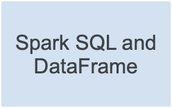
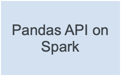
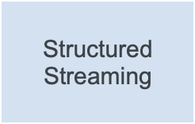

PySpark Overview#
Date: May 16, 2026 Version: 4.1.2
Useful links: Live Notebook | GitHub | Issues | Examples | Community | Stack Overflow | Dev Mailing List | User Mailing List
PySpark is the Python API for Apache Spark. It enables you to perform real-time, large-scale data processing in a distributed environment using Python. It also provides a PySpark shell for interactively analyzing your data.
PySpark combines Python’s learnability and ease of use with the power of Apache Spark to enable processing and analysis of data at any size for everyone familiar with Python.
PySpark supports all of Spark’s features such as Spark SQL, DataFrames, Structured Streaming, Machine Learning (MLlib), Pipelines and Spark Core.
 |
 |
 |
Python Spark Connect Client
Spark Connect is a client-server architecture within Apache Spark that enables remote connectivity to Spark clusters from any application. PySpark provides the client for the Spark Connect server, allowing Spark to be used as a service.
Spark SQL and DataFrames
Spark SQL is Apache Spark’s module for working with structured data. It allows you to seamlessly mix SQL queries with Spark programs. With PySpark DataFrames you can efficiently read, write, transform, and analyze data using Python and SQL. Whether you use Python or SQL, the same underlying execution engine is used so you will always leverage the full power of Spark.
Pandas API on Spark
Pandas API on Spark allows you to scale your pandas workload to any size by running it distributed across multiple nodes. If you are already familiar with pandas and want to leverage Spark for big data, pandas API on Spark makes you immediately productive and lets you migrate your applications without modifying the code. You can have a single codebase that works both with pandas (tests, smaller datasets) and with Spark (production, distributed datasets) and you can switch between the pandas API and the Pandas API on Spark easily and without overhead.
Pandas API on Spark aims to make the transition from pandas to Spark easy but if you are new to Spark or deciding which API to use, we recommend using PySpark (see Spark SQL and DataFrames).
Structured Streaming
Structured Streaming is a scalable and fault-tolerant stream processing engine built on the Spark SQL engine. You can express your streaming computation the same way you would express a batch computation on static data. The Spark SQL engine will take care of running it incrementally and continuously and updating the final result as streaming data continues to arrive.
Machine Learning (MLlib)
Built on top of Spark, MLlib is a scalable machine learning library that provides a uniform set of high-level APIs that help users create and tune practical machine learning pipelines.
Declarative Pipelines
Spark Declarative Pipelines (SDP) is a declarative framework for building reliable, maintainable, and testable data pipelines on Spark. SDP simplifies ETL development by allowing you to focus on the transformations you want to apply to your data, rather than the mechanics of pipeline execution.
Spark Core and RDDs
Spark Core is the underlying general execution engine for the Spark platform that all other functionality is built on top of. It provides RDDs (Resilient Distributed Datasets) and in-memory computing capabilities.
Note that the RDD API is a low-level API which can be difficult to use and you do not get the benefit of Spark’s automatic query optimization capabilities. We recommend using DataFrames (see Spark SQL and DataFrames above) instead of RDDs as it allows you to express what you want more easily and lets Spark automatically construct the most efficient query for you.
Spark Streaming (Legacy)
Spark Streaming is an extension of the core Spark API that enables scalable, high-throughput, fault-tolerant stream processing of live data streams.
Note that Spark Streaming is the previous generation of Spark’s streaming engine. It is a legacy project and it is no longer being updated. There is a newer and easier to use streaming engine in Spark called Structured Streaming which you should use for your streaming applications and pipelines.